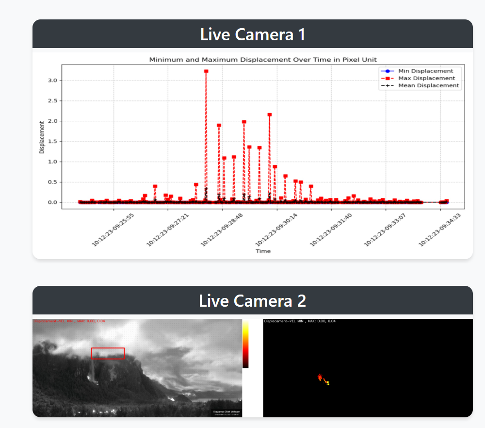

AkhDefo Software 2.2.59 documentation
This document presents a demonstration project utilizing the Akhdefo software for real-time monitoring of rockfalls. The project focuses on the application of optical flow processing using live camera feeds.
The core of this project lies in its capability to analyze and visualize displacement-time curves before and during rockfall events. Such data is invaluable in training neural network models aimed at enhancing early warning systems for landslides and rockfall hazards.
The following embedded frame provides direct access to our live monitoring interface:
Below is an image capturing a significant moment during the monitoring process:
